컨벤션기획사-2급 (2022-03-05 기출문제)
1과목: 컨벤션 기획
1. 국제회의 산업육성에 관한 법령상 국제기구나 국제기구에 가입한 기관 또는 법인·단체가 개최하는 국제회의의 요건에 해당하지 않는 것은?
- 해당 회의에 5개국 이상의 외국인이 참가할 것
- 회의 참가자가 300명 이상이고 그 중 외국인이 100명 이상일 것
- 3일 이상 진행되는 회의일 것
- 전체 참가자가 최소 1박 이상 상업적 숙박시설을 이용할 것
(정답률: 알수없음)

2. 컨벤션 프로그램 일정을 계획할 때 고려 사항으로 가장 거리가 먼 것은?
- 컨벤션 개최의 필요성
- 회의시설의 제약사항
- 운영될 회의유형（예: 강연, 패널 등)의 예상 운영시간
- 참가자의 회의장 간 이동 시간
(정답률: 알수없음)
3. 다음 중 소집단회의 (또는 분과회의)의 형태가 아닌 것은?
- Prerequisite session
- Concurrent session
- Breakout session
- Wrap-up session
(정답률: 알수없음)
4. 다음 중 회의유형을 가장 올바르게 선택한 경우는?
- 새로운 인터넷 검색로봇 기술에 관한 교육훈련을 위해 포스터세션을 준비했다.
- 기술과학에 관한 학술적인 문제를 토론하기 위해 컨퍼런스를 하였다.
- 나노산업협회 총회와 부수적인 소규모 회의, 전시 등을 함께하기 위해 세미나를 개최하였다.
- 하나의 주제에 대해 상반된 견해를 가진 동일분야의 전문가들이 사회자의 주도 하에 청중 앞에서 벌이는 공개토론회로 워크숍을 선택했다.
(정답률: 알수없음)
5. 총 고정비는 44,300,000원이고 참가자 1인당 변동비는 61,000원으로 분석되었다. 그리고 참가 예상자는 최소 1,700명으로 예측하고 있다. 컨벤션조직위원회에서는 컨벤션 개최를 통하여 5,000,000원의 이익을 창출하고자 한다. 1,700명이 참가하는 것을 전제로 하는 경우 주최조직의 재정목표 달성을 위한 1인당 최소참가비는?
- 80,000원
- 90,000원
- 100,000원
- 110,000원
(정답률: 알수없음)
6. 컨벤션 운영시 고정비와 변동비의 연결이 틀린 것은? (단, 고정비 - 변동비 순서이다.)
- 사무국 운영비 - 식음료비
- 회의장 임차료 - 등록가방 제작비
- 참가자 기념품비 - 홍보비
- 초청연사경바 - 수교물 비용
(정답률: 알수없음)
7. 주로 어떤 문제의 해결을 위해 특정한 주제를 가지고, 새로운 지식, 기술, 아이디어 등을 다루며 단기간이고 집중적인 교육 프로그램으로 어떤 문제를 해결하기 위해 함께 모여 의견을 나누거나 토론하는 형태의 회의는?
- Seminar
- Workshop
- Symposium
- Panel Discussion
(정답률: 알수없음)
8. 국제회의산업 육성에 관한 법령에서 국제회의도시의 지정 신청을 하고자 하는 경우에 특별시장·광역시장 또는 시장이 문화체육관광부장관에게 제출하는 서류에 해당하지 않는 것은?
- 숙박시설·교통시설·교통안내체계 등 국제회의 참가자를 위한 편의시설의 현황 및 확충계획
- 지정대상 도시 또는 그 주변의 관광자원의 현황 및 개발계획
- 국제회의시설의 보유 현황 및 이를 활용한 국제회의산업 육성에 관한 계획
- 300명 이상 참가한 국내회의 유치 및 개최 실적
(정답률: 알수없음)
9. 컨벤션행사 중 국제세미나 개최 시 홍보수단을 결정하는데 있어서 다음 중 저비용, 고효율 홍보수단은?
- 라디오
- 인적판매
- DM (Direct Mail)
- 기브어웨이 (Giveaway)
(정답률: 알수없음)
10. 개최지로 선정되기 위해 CVB는 잠재적 회의 주최자와 조직위원회 회원들을 개최지에 방문하도록 초대하며 FAM tour를 제공한다. FAM tour 시 포함되어야 하는 사항으로 가장 거리가 먼 것은?
- 회의장의 시설 및 위치 등과 같은 개최지의 일반적 사항에 대해 설명한다.
- 다양한 컨벤션 시설과 호텔 간, 지역 간 수송 메커니즘에 대해 설명한다.
- 개최지의 독특한 관광지，행사 등을 관람한다.
- 위험요소를 사전에 언급하고 이에 대한 대비책을 회의 주최자가 직접 마련하도록 공지한다.
(정답률: 알수없음)
11. 컨벤션산업의 관계마케팅 적용에 관한 설명으로 옳은 것은?
- 마케팅의 목표는 일회성 거래관계 창출을 위해 성립된다.
- 고객과의 관계를 파트너십으로 간주한다.
- 고객관리 방식은 불특정 다수를 대상으로 한다
- 고객과 제한된 의사소통의 기회를 가진다.
(정답률: 알수없음)
12. 다음 중 컨벤션 흥보 매체별 특성에 대한 내용으로 틀린 것은?
- 현수막 또는 배너의 경우 제작 단가가 높고, 많은 양의 정보를 전달하기 어렵다.
- DM(Direct Mail) 사용 시에는 전체적인 구성, 표지, 내용, 발송시간 등을 고려해야 한다.
- 인터넷은 많은 양의 정보 전달이 가능하나, 수요자와 접근의 제한성이 있다.
- 브로슈어 (Brochure)는 참가자 지향적 수단이나 많은 양의 폐기와 낭비가 발생한다.
(정답률: 알수없음)
13. 다옴 중 참가자에 대한 프로모션 계획으로 적절하지 않은 것은?
- 프레스룸 설치 -회의기간 동안 무료로 사용 가능한 사무 및 통신 기기를 갖추어 놓는다.
- 기자회견 - 행사 일정과 관련 없이 가급적 수시로 개최하여 노출효과를 높인다.
- 보도자료 배포 - 연사의 연설내용 요약본과 회의 주요내용 등을 선정된 사진자료와 함께 제공한다.
- 사진촬영 - 회의기간 중 공식사진업체를 선정하여 주요 장면들을 기록하게 한다.
(정답률: 알수없음)
14. 컨벤션 계약 제안서 검토 시 올바르지 않은 것은?
- 계약서 상의 조건 이외에 추가적으로 동의된 조건들은 문서화 하지 않고 구두로만 상호 확인한다.
- 계약서 상 법적조항들이 모든 조건에 어떻게 영향을 끼치는지 이해한다.
- 개정사항, 추가사항, 삭제사항들을 통합하는 가장 좋은 방법을 결정한다.
- 의미가 명확하지 않거나 편중되고 과장된 조항들을 확인한다.
(정답률: 알수없음)
15. 다음 중 소집단 회의의 일종으로 일정한 건에 의하여 참가 대상이 제한되어 있는 회의형태는?
- Plenary Sessions
- Breakout Sessions
- Concurrent Sessions
- Prerequisite Sessions
(정답률: 알수없음)
16. 컨벤션 기획 시 환경분석 (Environment Analysis) 단계에서 수행하는 내용이 아닌 것은?
- 주변 환경의 영향을 많이 받기 때문에 정치, 경제, 사회적 환경에 대한 분석을 한다.
- 참가예상자들의 연령, 성별, 문화적 경험, 회의 참가 경력, 참가 동기, 회의 참가 강제성 여부 등에 대한 조사를 실시한다.
- 국내외에서 기존에 개최된 비슷한 컨벤션에 대한 조사와 전차대회의 장단점에 대한 분석을 한다.
- 회의의 궁극적 목표 및 분야별 목표에 대해 분석하고 수립한다.
(정답률: 알수없음)
17. 국제회의산업 육성에 관한 법령에서 정의한 용어의 설명으로 옳지 않은 것은?
- 국제회의산업 : 국제회의의 유치와 개최에 필요한 국제회의시설, 서비스 등과 관련된 산업을 말한다.
- 국제회의도시 : 국제회의산업의 육성·진흥을 위하여 관련 법령에 따라 지정된 특별시·광역시 또는 시를 말한다.
- 국제회의 전담조직 : 국제회의산업의 진흥을 위하여 각종 사업을 수행하는 조직을 말한다
- 국제회의 집적시설 : 국제회의의 개최에 필요한 회의시설, 전시시설 및 이와 관련된 부대시설 등으로서 대통령령으로 정하는 종류와 규모에 해당하는 것을 말한다.
(정답률: 알수없음)
18. 다음 ( )안에 들어갈 용어를 A - B - C - D순으로 바르게 열거한 것은?
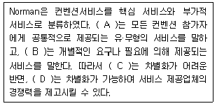
- 부가적 서비스 - 핵심 서비스 – 부가적 서비스 - 핵심 서비스
- 핵심 서비스 - 부가적 서비스 – 부가적 서비스 - 핵심 서비스
- 부가적 서비스 - 핵심 서비스 - 핵심 서비스 - 부가적 서비스
- 핵심 서비스 - 부가적 서비스 - 핵심 서비스 – 부가적 서비스
(정답률: 알수없음)
19. 기본적으로 연설자에게 보내는 서면통신 중 행사 전에 참석자 숫자 등 행사에 대한 자세한 정보와 스케줄을 보내는 것은?
- Reminder
- Thank you letter
- Invitation letter
- Survey
(정답률: 알수없음)
20. 다음 중 회의 주체별 주요 마케팅 활동에 관한 설명으로 틀린 것은?
- 컨벤션의 주체별 주요 마케팅 활동은 회의유치 마케팅, 회의참가자 마케팅, 회의개최장소 및 개최지 마케팅으로 구분할 수 있다.
- 개최지 마케팅은 PCO 등이 하드웨어로부터 제공받게 되는 서비스, 장소제공, 각종 행사진행에 수반되는 제반 활동으로서 시장조사 및 환경분석, 마케팅 목표설정, 세부 실행계획 수립 및 4P 활용전략 등을 들 수 있다.
- 회의 유치 마케팅 활동으로는 회의개요, 회의유치와 관련한 주요내용, 참가자 현황, 경제환경 등 유치경쟁 환경분석 등을 들 수 있다.
- 회의참가자 마케팅 활동은 행사진행과 운영서비스, 고객의 애로 해소, 위험관리 서비스 활동 등과 같은 현장 마케팅에 주력하여야 한다.
(정답률: 알수없음)
21. 컨벤션 개최 이후의 평가 목적이 아닌 것은?
- 문제의 규명과 회피
- 비용대비 편익의 규명
- 성공 및 실패요인 분석
- 스폰서와 담당조직의 만족도 확인
(정답률: 알수없음)
22. 전시회는 다른 촉진매체와 구별되는 몇 가지 특성이 있는데, 다음에서 설명하는 전시회의 특성은?
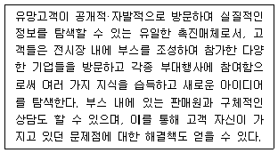
- 3차원적 특성
- 선택된 매체
- 즉시성
- 경제성
(정답률: 알수없음)
23. 국제회의 산업 종사자가 공통적으로 갖추어야 할 조건으로 가장 거리가 먼 것은?
- 기본적 어학능력이 요구된다.
- 국제적 조직을 이끌 수 있는 정치력이 요구된다.
- 위기 대처능력과 순발력·적응력이 요구된다.
- 뛰어난 국제감각과 국제적 매너를 갖추어야 한다.
(정답률: 알수없음)
24. 한국 컨벤션산업의 SWOT분석 결과로 적합하지 않은 것은?
- Strength : 동북아 비즈니스 중심지 개발을 위한 경제특구 형성
- Weakness : 비싼 숙박비 및 숙박시설 부족
- Opportunity : 주변국의 경쟁력 강화
- Threats : 남북관계에 따른 정치적 불안정
(정답률: 알수없음)
25. 다음 중 컨벤션 마케팅 믹스 4가지 요소에 대한 내용으로 틀린 것은?
- Product : 컨벤션 프로그램, 개최지, 개최시설
- Price : 등록비 및 가타 경비
- Place : 컨벤션 개최국가의 재정건전성
- Promotion : 참가 수요자들에게 참가할만한 컨벤션이라는 점을 설득하고 커뮤니케이션 하는 기술적인 요소
(정답률: 알수없음)
26. 다음 중 국제회의의 유치제안서에 포함되는 내용과 가장 거리가 먼 것은?
- 주요 참석인사 명단
- 정부기관 또는 지방자치단체의 지원표명 서신
- 수입 및 지출예산(계획)안
- 조직위원회 구성 및 후원단체 소개
(정답률: 알수없음)
27. 국제회의의 회의실 배치 시 같은 장소에서 인원을 가장 많이 수용할 수 있는 형태는?
- 극장식 배치
- 교실식 배치
- 이사회식 배치
- U자식 배치
(정답률: 알수없음)
28. 컨벤션 전담기구 (컨벤션뷰로，CVB)의 본질적 기능이 아닌 것은?
- 회의시설 설치 및 각종 식음료 제공
- 관광목적지 및 컨벤션 개최지로서의 마케팅
- 국제회의 유치·개최 정보 수집 및 제공
- 마케팅활동을 통한 도시 이미지 창출
(정답률: 알수없음)
29. 국제회의 종료 후 사후관리 사항에 포함되지 않는 내용은?
- 결과보고서 작성
- 행사 결산보고서 작성
- 행사장 조사 관련 업무 협조
- 조직위원회 및 사무국 해산
(정답률: 알수없음)
30. 전시 참가업체에게 제공되는 매뉴얼에 포함되는 내용으로 가장 거리가 먼 것은?
- 물품 운송과 취급
- 부스 반입 및 반출
- 유사 전시회 운영사례
- 참가업체 지정 서비스업체 (EACS) 계약 양식
(정답률: 알수없음)
2과목: 컨벤션 운영
31. 다음은 비즈니스 회의의 대화 내용을 일부 발췌한 것이다. 일어날 수 있는 순서대로 나열한 것은?
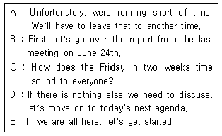
- B - C - D - E - A
- E - C - B - D - A
- B - A - C - D - E
- E - B - D - A - C
(정답률: 알수없음)
32. 위기 관리는 크게 단계별로 행사 전(Pre-event), 행사 중(On-event), 행사 후(Post-event) 단계에 따라 구분하여 실행하는데, 다음 중 주로 행사 전(Pre-event) 단계에서 실시하는 위기 관리 항목은?
- 위기 관리 활동 평가
- 행사 중 발생된 위기 항목의 수정 및 보완
- 행사 보험 계획 수립 및 가입
- 위기커뮤니케이션 활동
(정답률: 알수없음)
33. 운영인력에 대한 인력정보 관리 데이터베이스에 포함되어야 할 내용이 아닌 것은?
- 장래희망
- 인력유형
- 근무파트
- 업무내역
(정답률: 알수없음)
34. 다음 ( )안에 들어갈 내용으로 가장 적합한 것은?
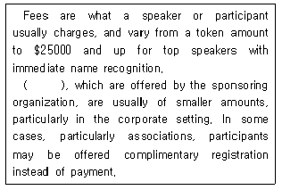
- Fines
- Honorariums
- Giveaways
- Gratuities
(정답률: 알수없음)
35. 다음 중 메뉴의 역할과 가장 거리가 먼 것은?
- 식당의 경영방침이 집약되어 있다.
- 고객과 약속한 가치이다.
- 식자재의 공급시장을 안정화 시킨다.
- 식당의 개성을 표현하고 이미지를 조성한다.
(정답률: 알수없음)
36. 컨벤션에 필요한 현장 운영 인력을 모집할 때 공고문에 기대하지 않아도 되는 항목은?
- 개최 개요
- 근무 조건
- 지원 절차
- 교육 자료
(정답률: 알수없음)
37. 회의실 설치를 기획할 때 반드시 고려해야 되는 사항으로 가장 거리가 먼 것은?
- 회의실의 수용능력
- 참가자의 취향이나 기호
- 회의실 내 A/V 시설 유무
- 회의의 성격이나 프로그램의 유형
(정답률: 알수없음)
38. 온라인 결제대행사(PG사)를 선정하기 위해 분석해야 할 우선 항목으로 가장 거리가 먼 것은?
- 국내외 신용카드 결제 여부
- 결제 모들 구현 환경
- 설립연도
- 카드 수수료
(정답률: 알수없음)
39. 컨벤션 관광의 효과에 관한 설명으로 옳지 않은 것은?
- 컨벤션 주최측의 주요 재정 수입원으로 작용한다.
- 참가자에게 즐거움과 체험활동을 제공하여 참가자 만족도를 높일 수 있다,
- 관광 수입으로 개최지역에 실질적이며 경제적인 효과를 제공한다.
- 주최지나 주최국의 문화 및 관광상품의 홍보효과를 줄 수 있다.
(정답률: 알수없음)
40. 레스토랑 서비스 메뉴 중 A La Carte Menu에 대한 설명으로 가장 옳은 것은?
- 일정한 간격을 두고 주기적으로 판매하는 메뉴로서 식자재 가격 변동에 유리하다.
- 메뉴의 가격 결정에서 각 메뉴마다 독립적으로 가격이 분리되어 있는 경우를 말한다.
- 여러 가지 메뉴를 한 코스(Course)로 세트(Set)화하여 한 가지의 가격으로 메뉴 가격을 정한다.
- 식자재의 성숙기인 계절을 선택하여 그 기간 동안만 판매하는 메뉴이다.
(정답률: 알수없음)
41. 다음 중 관광산업의 일반적인 특징으로 틀린 것은?
- 복합성
- 입지의존성
- 공익성
- 불변성
(정답률: 알수없음)
42. 국제회의 의전 예절에 부합되지 않는 것은?
- 대통령을 대행하여 행사에 참석하는 정부각료는 외국대사에 우선한다
- 외빈 방한 시 동국주재 아국대사가 귀국하였을 때에는 주한 외국대사 다음으로 할 수 있다.
- 대사가 여자일 경우의 서열은 자기 바로 상위 대사 부인 다음이 되며 그의 남편은 최하위의 공사 다음이 된다.
- 우리가 주최하는 연회에서 우리 측 귀빈은 동급의 외국 측 귀빈보다 상위에 둔다.
(정답률: 알수없음)
43. 호텔 레스토랑 서비스 방법인 러시안 서비스(Russian Service)의 특징으로 옳은 것은?
- 전형적인 연회 서비스이다.
- 음식을 신속하게 서비스할 수 있다.
- 주방에서 음식을 접시에 담아서 고객에게 바로 제공한다.
- 일품요리를 제공하는 전문식당에 적합한 서비스이다.
(정답률: 알수없음)
44. 국제회의 현장운영 인력 중 각 회의장에 상주하여 발표의 시간관리, 음향의 체크, 사무국과의 연락업무를 담당하는 요원은?
- 종합안내요원
- 클럭
- 진행요원
- 접대요원
(정답률: 알수없음)
45. PCO (Professional Convention Organizer)가 수행해야 하는 주요 업무와 가장 거리가 먼것은?
- 기본 및 세부 추진계획서 작성
- 회의장 및 숙박장소 선정
- 행사 준비 일정표 작성
- 행사장 유치계획서 작성
(정답률: 알수없음)
46. 온라인 회의 등록 프로그램 개발을 추진할 때 개발자의 이해를 돕기 위해 웹사이트에서 구현되는 주요 기능을 그림이나 사진 등으로 정리한 계획표를 무엇이라고 하는가?
- 스토리 보드(story board)
- 플로우 다이어그램(flow diagram)
- 이미지 차트(image chart)
- 프로세스 템플릿(process template)
(정답률: 알수없음)
47. 컨벤션 운영에 있어서 IT (Information technology)가 적용되는 예로서 가장 거리가 먼 것은?
- 식음료 서비스 제공
- 회의장 출입관리
- 사전등록 및 전자결제
- 화상회의 활용
(정답률: 알수없음)
48. 커피브레이크에 대한 설명 중 틀린 것은?
- 커피브레이크의 소요시간은 30분이 넘지 않도록 한다.
- 장소는 회의에 방해되지 않도록 가급적 회의실에서 먼 곳에 설치한다.
- 오후 회의인 경우 회의 중간시점보다 조금 늦은 시간에 커피브레이크를 제공한다.
- 아침에는 아침식사를 하지 못한 참석자를 위해서 쿠키나 간단한 빵 종류를 준비한다.
(정답률: 알수없음)
49. 객실이 400실인 A호텔은 연간 총고정비용 240억원, 객실 단위당 변동비용이 10000원, 객실단위당 판매가격은 250000원이라면 손익분기점에 도달하기 위해서는 연간 몇실을 판매해야 되는가?
- 75000 실
- 80000 실
- 100000 실
- 90000 실
(정답률: 알수없음)
50. 참석자 동선 관리에 관한 설명으로 가장 옳지 않은 것은?
- 동선 관리를 위해 필요한 인력을 적소에 배치한다.
- 필요한 사인물 및 안내문 등을 적소에 장착한다.
- 상황을 정확히 판단하고 필요할 경우 수립된 계획을 변경하여 실행한다.
- 돌발 또는 변경 사항은 별도 보고 없이 처리한다.
(정답률: 알수없음)
51. 국제회의에서 의전은 세계 공통적으로 절대적인 기준이 없기 때문에 그 처리가 매우 까다롭다. 다음 중 국제회의에서 예절을 다루는 의에서 예절을 다루는 관습과 규정을 의미하는 용어는?
- Oral Text
- Protocol
- Proposal
- Special Order
(정답률: 알수없음)
52. 다음 편지에 관한 설명으로 가장 적합한 것은?
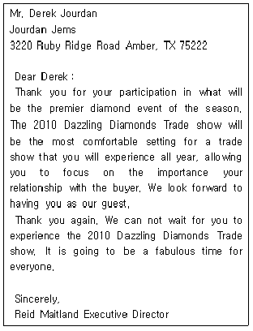
- This letter was not written by Reid Maitland.
- The writer recommends the receiver's participation in the diamond show.
- This letter appreciates the receiver's participation in the previous diamond show.
- The exhibitor application is not needed to participate in the show.
(정답률: 알수없음)
53. 컨벤션 참가자에게 지급하는 등록가방 (congress kit)의 내용물로 적합하지 않은 것은?
- 명찰(name tag)
- 여권
- 회의스케줄
- 회의내용 및 진행과 관련한 설문지
(정답률: 알수없음)
54. 컨벤션 식음료 서비스 업체 선정 및 식음료 서비스 제공에 있어서 고려 사항에 대한 설명으로 옳지 않은 것은?
- 주최자는 식음료 예산 선정 시 식자재 비용 변동 등에 따라 가격 인상이 발생할 경우도 고려해야 한다.
- 기본적인 비용 이외에 세금과 팁 등을 감안하여 추가 예산을 마련해야 한다.
- 식음료 서비스 비용손실의 최소화를 위해 최소한의 음식 주문량 예약은 당일 오전까지 파악하여 연락한다.
- 날씨 변화나, 쇼핑 및 오락 참가를 위해 총 참가자 수 대비 실제 식사 참여자 수가 변동되는 것을 감안해야 한다.
(정답률: 알수없음)
55. 아래의 글은 무엇에 관한 내용인가?
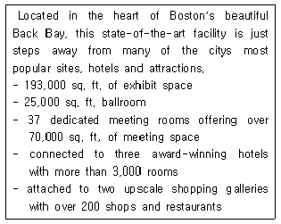
- Hotel
- Shopping Center
- Convention and Visitors Bureau
- Convention Center
(정답률: 알수없음)
56. 컨벤션기획에 있어서 참석자 사전등록의 장점이 아닌 것은?
- 온라인 등록시스템 개발베저감
- 참석인원 예측
- 자금흐름의 개선
- 홍보 가이드라인 제공
(정답률: 알수없음)
57. 다음 대화가 이루어지는 장소는?
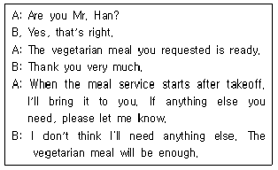
- airplane
- restaurant
- hotel
- museum
(정답률: 알수없음)
58. 다음 중 관광 프로그램에 있어서 F.I.T라는 용어가 뜻하는 것은
- 외국인 단체 관광객
- 외국인 개별 관광객
- 내국인 단체 관광객
- 내국인 개별 관광객
(정답률: 알수없음)
59. 회의 개최 시 registration desk에 관한 설명으로 틀린 것은?
- 전문적인 컨벤션 센터가 아닌 경우에는 설치하지 않으며, 보통 회의개시 약 일주일 전부터 설치한다
- 크기는 회의의 규모, 참가 예정자의 수, 데스크에서 수행하는 업무량과 기능에 따라 정해진다.
- 보통 대회의장 (호텔의 경우 grand ballroom) 전면 로비에 설치한다.
- 참가자 등록이 주 임무이나 회의와 관련된 문의에 대한 응답과 편의를 제공할 수도 있다.
(정답률: 알수없음)
60. The followings are some examples of cover written by job seekers. What’s the one which cannot be used in the underlined part?
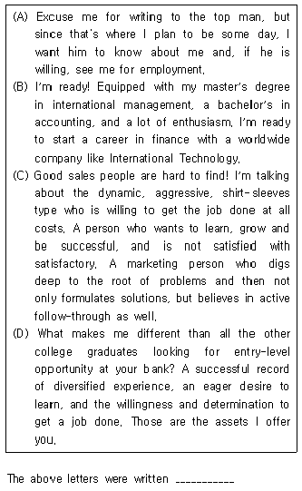
- to attract the reader’s attention.
- to persuade the reader that he/she is a visible candidate.
- to motivate the reader to respond by inviting him/her for an interview.
- to flatter the reader
(정답률: 알수없음)
3과목: 부대행사 기획·운영
61. 행사잠 접근로 계획과 관련한 설명으로 옳지 않은 것은?
- 행사장 접근로의 효율적인 운영을 위해 프로그램 출연자의 이동로, 시설 장비의 이동로, 식음료 서비스를 위한 통로 등은 필요시 중복하여 운영되도록 설계하는 것이 좋다.
- 방문객의 이동이 가장 큰 중심이 되지만, 프로그램 출연자의 접근, 시설장비의 이동 등을 고려해야 한다.
- 행사장 내의 동선의 구성은 방문객의 쾌적성을 향상시켜주는 방향으로 설계되어야 한다.
- 프로그램 행사장으로 향하는 동선은 폐쇄적인 것보다는 개방적인 동선이 바람직하다.
(정답률: 알수없음)
62. 다음 중 이벤트 관리자의 역할에 관한 설명으로 틀린 것은?
- 이벤트 개최 의뢰자 및 스폰서의 요구 수용을 위한 관리
- 이벤트 조직관리 운영
- 이벤트 개최 성과에 대한 예측과 평가
- 참가자 안내와 등록 업무 수행
(정답률: 알수없음)
63. 전시회 운영인력 운용에 대한 설명 중 적절하지 않은 것은?
- 전시책임자는 파트별로 교육 매뉴얼을 만들어 현장 근무자를 교육한다.
- 근무지별로 운영요원의 필요 인원수를 파악하여 배치하되, 봉사자, 아르바이트 등의 외부인원을 배치할 수 있다.
- 전시회 위기관리 업무는 중요 보안사항을 다루는 경우가 많으므로 위기관리 관련 자료는 전담조직 구성원들만 공유한다.
- 전시회 개최 전 위기관리팀 전체의 비상연락망을 구성하여 항시 대응체제를 구축한다.
(정답률: 알수없음)
64. 이벤트 연출 리허설에 대한 설명으로 가장 옳은 것은?
- 첫 리허설은 이벤트 개최일 전날에 시행한다.
- 리허설 시행 전 현장 연출의 수정 및 보완을 완벽히 하여 리허설 과정에서는 연출 및 시나리오 수정이 없어야 한다.
- 리허설 진행 시 VIP 동선 체크를 위해 최소 1회 이상 VIP 사전 방문을 요청한다.
- 리허설은 행사장 세팅 완료 후 큐시트에 맞추어 진행한다.
(정답률: 알수없음)
65. 다음에서 설명하는 무대 유형은?
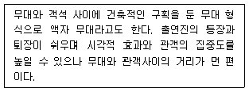
- 자유배치형 무대 (black box stage)
- 돌출 무대(thrust stage)
- 원형 무대(arena stage)
- 프로시니엄 무대(proscenium stage)
(정답률: 알수없음)
66. 이벤트 계획에 있어서 출연자 관리에 관한 설명으로 옳지 않은 것은?
- 많은 변수가 발생할 수 있으므로 출연자 담당 스태프를 별도로 배정한다.
- 출연자에게 필요한 시스템 및 특수효과 장비 등은 출연자가 직접 준비하도록 하여 기획자의 리스크를 줄인다.
- 공연팀이나 도우미 등은 오디션이나 면접, 영상확인 등을 통하여 사전 검증단계를 거친다.
- 안전한 행사를 위해 출연자들과 사전 리허설 단계를 진행한다.
(정답률: 알수없음)
67. 이벤트 개최지역 선정의 고려요인으로 가장 거리가 먼 것은?
- 개최지역의 교육수준
- 개최지역의 이미지
- 개최지역까지의 접근성
- 개최지역에서의 시설 밀집성
(정답률: 알수없음)
68. 시청각 장비를 이용한 프리젠테이션 장비 설치를 기획하고자 할 때 고려사항이 아닌 것은?
- 무대
- 저작권 침해
- 내용의 시각화
- 설치 및 리허설
(정답률: 알수없음)
69. 이벤트 리스크 관리과정의 일반적인 순서로 옳은 것은?
- 이벤트 리스크 식별 → 이벤트 리스크 평가 → 이벤트 리스크 관리
- 이벤트 리스크 평가 → 이벤트 리스크 식별 → 이벤트 리스크 관리
- 이벤트 리스크 관리 → 이벤트 리스크 평가 → 이벤트 리스크 식별
- 이벤트 리스크 평가 → 이벤트 리스크 관리 → 이벤트 리스크 식별
(정답률: 알수없음)
70. 이벤트 연출 개념에 대한 설명으로 틀린 것은?
- 연출은 기획단계에서 수립된 프로그램을 실현하는 작업으로, 계획된 프로그램을 참석자에게 효과적으로 전달하는 창의적인 활동이다.
- 연출 인력 구성은 보통 외부 연출 전문가 영입을 통해 진행하지만，중요성이 높은 대규모 행사의 경우에는 자체 내부 인력을 중심으로 구성하는 것이 좋다.
- 연출 작업에서는 무대 및 공간, 디자인, 콘텐츠, 현장 퍼포먼스, 시스템 운용 요소 등을 전반적으로 다룬다.
- 연출 스태프의 구성은 이벤트 성격, 규모, 프로그램, 예산 등에 따라 달라지는데, 보통 이벤트 기획사(전담 대행사), 협력자(제작사), 시스템업체 소속 인력으로 구성된다.
(정답률: 알수없음)
71. 컨벤션 시설물의 안전등급 심사결과 D등급일 때 시설물의 안전 및 유지관리에 관한 특별법령에 따른 해당 시설물의 정밀안전진단 실시 시기는?
- 3년에 1회 이상
- 4년에 1회 이상
- 5년에 1회 이상
- 6년에 1회 이상
(정답률: 알수없음)
72. 다음 중 위기 특성에 따른 리스크 유형과 그 예시가 올바르게 연결되지 않은 것은?
- 폭발적 위기 : 화재
- 즉각적 위기 : 유언비어
- 점진적 위기 : 노사분규
- 만성적 위기 : 가십성 보도
(정답률: 알수없음)
73. 다음에서 설명하는 사교행사의 종류는?
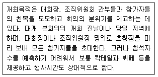
- 환영 리셉션(Welcome reception)
- 환송 파티(Farewell party)
- 축제 한마당(Festival)
- 갈라 디너(Gala dinner)
(정답률: 알수없음)
74. 연회 초청장에 기재된 Black tie에 해당되는 복장은?
- 고유의상
- 캐쥬얼(casual)
- 턱시도(tuxedo) 혹은 정장(formal)
- 평상복(informal)
(정답률: 알수없음)
75. Goldblatt가 제시한 성공적인 이벤트의 기획과정을 바르게 나열한 것은?
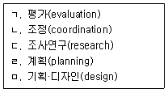
- ㅁ → ㄱ → ㄴ → ㄷ → ㄹ
- ㄹ → ㄴ → ㄱ → ㅁ → ㄷ
- ㄹ → ㄱ → ㄷ → ㅁ → ㄴ
- ㄷ → ㅁ → ㄹ → ㄴ → ㄱ
(정답률: 알수없음)
76. 다음 중 전시회의 회의장 좌석배치(Seat arragement)에 관한 설명으로 틀린 것은?
- 교실형은 원탁(rounds) 배치보다는 좁은 공간에서 많은 참가자를 수용할 수 있고, 테이블이 있어서 참가자가 자료를 읽거나 필기를 할 수 있다.
- 원탁(rounds) 혹은 반원형 (half-rounds) 배치는 테이블에 동석한 참가자 간의 상호대화가 용이하며 식음료 서빙에 편리하나, 회의장 내 전체 참가자 간의 상호작용은 제한된다.
- V자형 배치는 교실형과 같이 대규모 단체회의에 적합하며, 모든 참가자가 비슷한 거리에서 연사와 함께 할 수 있어 연사의 강연 집중도를 높일 수 있다.
- 극장식 배치는 읽기나 쓰기를 필요로 하지 않는 대규모 단체의 회의에 적합하며, 메모할 수 있는 받침이 없을 수 있고, 단체 상호작용이 제한된다.
(정답률: 알수없음)
77. 다음 중 전시장 안전점검 업무와 관련되지 않는 것은?
- 전시장 도면 확보를 통하여 시설물에 대한 기본 구조를 파악한다.
- 소방시설 및 응급시설을 확인한다.
- 편의시설 파악 후 참관객을 위한 안내판을 설치한다.
- 전시장 하중과 과적 전시품이 있는지를 확인한다.
(정답률: 알수없음)
78. 이벤트 기획을 위한 무대 및 시스템 파악과 관련하여 다음 설명 중 옳지 않은 것은?
- 확정된 연출 내용을 사전에 파악하여 필요한 무대 및 시스템 내역을 작성한다.
- 행사장 자체 보유 시스템 장비 여부를 확인하고 추가로 필요한 시스템 내역을 파악한다.
- 행사장이 고정식 무대를 보유한 경우 자유로운 연출 실행이 제한되고, 무대 사용 비용이 추가되어 예산적인 면에서 불리하므로 해당 시설 사용을 지양한다.
- 행사장 답사 및 실측 시 제작사, 시스템 업체와 동반하여 행사장 내 시설을 점검한다.
(정답률: 알수없음)
79. 전시장에서 응급환자 발생 시 대응 및 행동요령으로 옳지 않은 것은?
- 먼저 신속하게 피해상황을 파악하고 119에 신고한다.
- 운영사무국은 모든 운영요원들에게 상황을 전파하고 구급대원의 진입통로를 확보한다.
- 긴급을 요하는 경우라도 119 구급대원이 도착할 때까지 무조건 대기한다
- 구급에 동원되지 않은 운영요원들은 참관객들이 동요되지 않도록 현장질서를 유지한다.
(정답률: 알수없음)
80. Drayage rates에 가장 영향을 많이 미치는 요인은?
- Time of year
- Length of show
- Union jurisdiction
- Move-in/move-out time
(정답률: 알수없음)
이유: 국제회의는 대개 다양한 국가에서 온 참가자들이 모여서 진행되는데, 이들 참가자들이 모두 다른 숙박시설을 이용하면 조직과 안전에 문제가 생길 수 있기 때문에, 일정 수준 이상의 숙박시설을 이용하도록 규정하는 것입니다. 이를 통해 참가자들의 안전과 편의를 보장하고, 국제회의의 진행을 원활하게 할 수 있습니다.